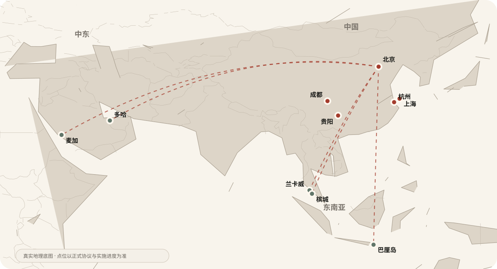

缺产权保护
原创纹样、工艺和数字作品缺少标准版权档案与司法存证。
非遗不应只被保存，
也应在青年手中继续生长。
这不是一次评选，也不是一场展览，而是一套从创作发现、权利保护、IP孵化、产品开发到全球场景落地的长期系统。
原创纹样、工艺和数字作品缺少标准版权档案与司法存证。
青年匠人缺少故事包装、视觉识别与公众认知。
创作与服饰、家居、文旅、景区和酒店消费场景彼此割裂。
传统手艺难以完成确权、授权、素材管理和规模化合作。
全国开放申报，不以持证身份设限。
学术、数字文创与产业专家联合评选。
版权登记、司法存证与资产档案。
人物故事、视觉包装与媒体传播。
进入服饰、家居、美妆与文旅产品。
青年设计连接乡村匠人与农闲生产。
城市、景区、酒店与海外空间展示销售。
收益支持公益、人才与下一轮创新。
面向45周岁以下青年创作者，每年遴选100位进入榜单与人才库，完成数字确权、个人IP包装与产业对接。
用青年设计升级传统手作，吸纳乡村农闲劳动力承接生产订单，并通过酒店、景区与文旅渠道打开销路。
在中东与东南亚文旅场景展示年轻化中国非遗，推动中外匠人对话、跨境共创与本土手工业升级。
构建“北京年度主展—全国城市巡展—一带一路海外巡展”三级矩阵，持续沉淀公共品牌价值。
在城市商圈、4A/5A景区、酒店综合体与海外度假空间建立常态化展览、零售与体验场景。
项目以中国为创新与内容中心，连接中东、东南亚高端酒店和度假场景。地图按真实经纬度绘制，路线与城市相对位置不再使用抽象多边形替代。

以青年表达推动传统文化创造性转化与活态传承。
以IP、设计和订单盘活农闲劳动力与乡村手工业。
打通创作、确权、孵化、授权和实体落地产业链。
以年轻化非遗IP传播中国文化并促进产业互利。
为酒店、景区和商业空间提供可更新文化内容。
建立学术审核标准，杜绝文化曲解与低俗化。
联盟链与司法存证并行，不开展金融炒作。
公益专项资金与商业营收独立核算和审计。
明确版权、授权范围、收益分配与使用记录。
以自有场地联营和内容输出降低固定成本。
规范跨境传播、巡展、知识产权与合作流程。
连接青年创作者、文化机构、公益力量、品牌企业、地方政府、景区与全球文旅空间，让非遗在真实世界中持续生长。